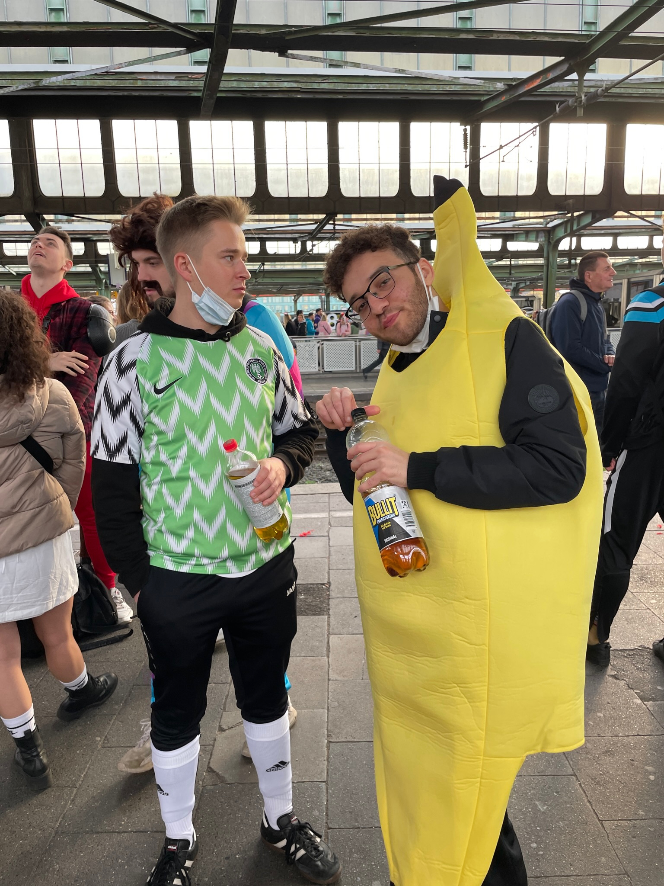
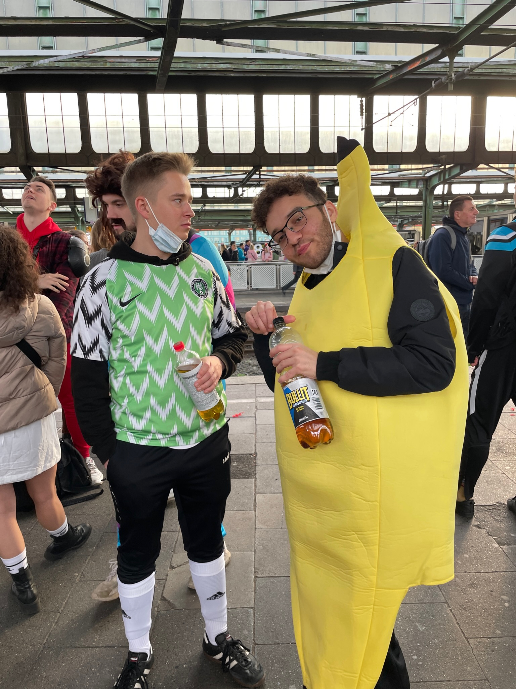
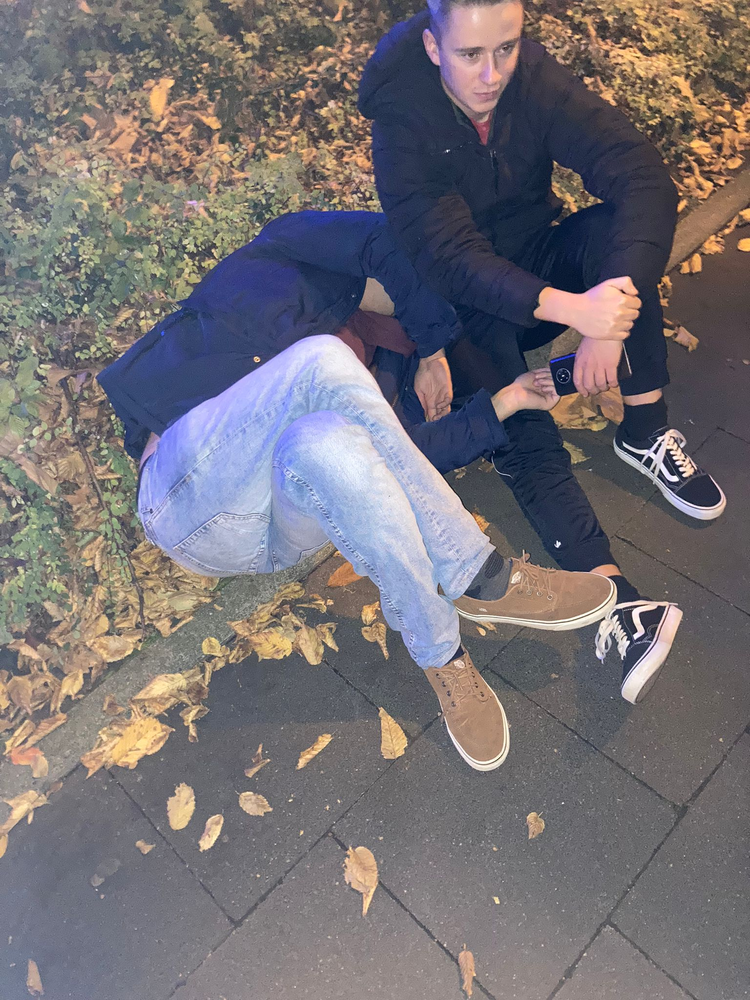
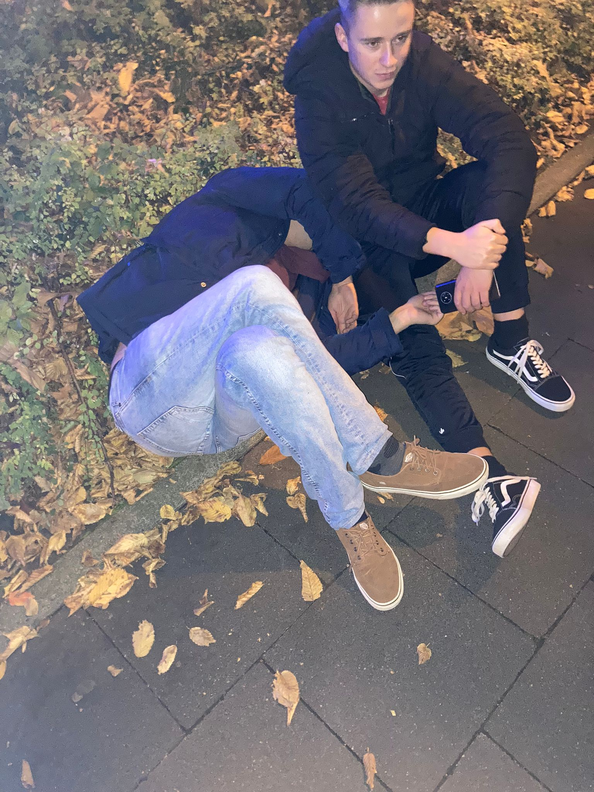
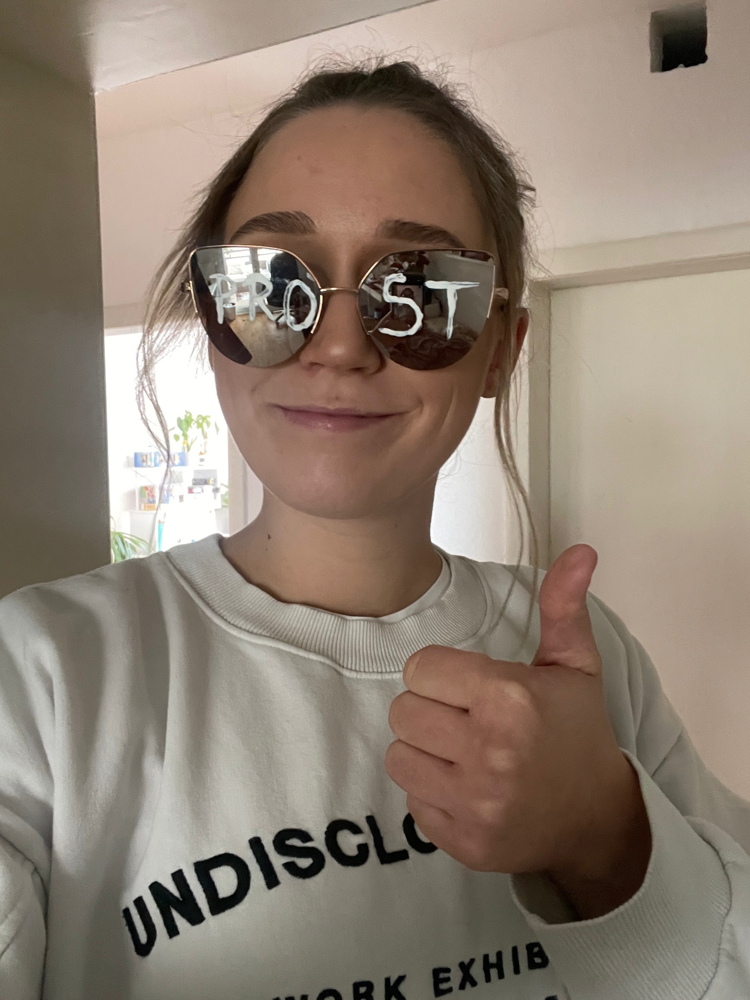
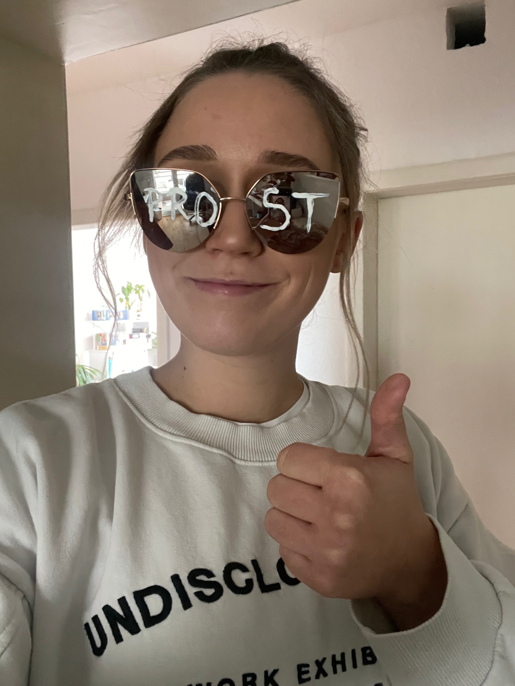

Meet the Residents
 

Maher
Maher ist der Idiot, der diese Website erstellt hat. Warum? Ich hatte zu viel Gras und 3 freie Stunden heute Morgen, ich bin auch Single, also ist das alles, was ich habe ... Ich mag Technologie, Geschichte, Philosophie und es, während dem Sex einen Bananenkostüm zu tragen. Das Foto oben ist tatsächlich von mir nach einer Orgie mit anderen Leuten, die als verschiedene Früchte und Gemüse verkleidet waren. Ich mag es auch, Bananen nach dem Sex zu essen...


Filip
Filip ist die Person, die dafür sorgt, dass diese WG immer mit Bier bestückt ist. Er mag Metal, Technologie und hat nur schwarze Kleidung. Er liebt seine Haare auch viel zu sehr. Auch die Person mit der höchsten Alkoholtoleranz in der WG - aber irgendwie ist er immer die betrunkenste Person auf jeder Party.

Viktoria
Viktoria ist das neueste Mitglied unseres Haushalts. Sie hat bereits 17 mentale Krisen und 4 Zusammenbrüche in der WG durchgemacht. Sie ist klein, aber überraschend mächtig. Sie mag zwar nicht so aussehen, als könnte sie viel Schaden anrichten, aber wenn man sie zwingt, wird sie dich emotional zerstören. Sei vorsichtig.


Ahmed
Ahmed ist derjenige, der dafür sorgt, dass diese WG gut gepflegt wird und nicht zu häufig zusammenbricht. Er ist leicht der beste Tutor in der Brücke "Wir haben Leute gefragt". Er ist der Lebensinhalt der Party und kann später beim Betrunkensein tatsächlich gut tanzen.

Azam
Azam ist der ruhige Teil der Gruppe. Sie ist auch die einzige Person, die in dieser WG tatsächlich erwachsen ist. Sie kocht unglaubliches Essen! Sie ist der größte Fan von Kino und Filmen in der WG und wird immer den Abend mit einem großartigen Vorschlag für eine Serie oder einen Film retten! Auch die Person, die dafür sorgt, dass diese WG nicht zu einem Müllfeuer wird.
 

Dylan
Dylan ist die konkurrenzfähigste Person in der WG. Er mag jeden einzelnen Sport, der jemals existiert hat, und hat 2 Stimmungen: High Dylan oder Drunk Dylan, beide sind lustig, aber stellen Sie sicher, dass Sie auf seiner Wellenlänge sind, bevor Sie eine Unterhaltung mit ihm beginnen.

 

Isa
Isa ist die wilde Karte der Gruppe. Man weiß nie genau, was sie als nächstes tun werden, aber es ist immer garantiert chaotisch. Sie haben ein Talent dafür, die zerstörerischsten Möglichkeiten zu finden, um Spaß zu haben. Sie wohnt zwar nicht mehr hier, aber sie lebt in unseren Herzen ❤


Nikhil
Der reichste von uns allen. Auch der Einzige, der voll beschäftigt ist. Derzeit in Indien, also feiert er leider nicht mit uns. Wir vermissen Nikhil alle sehr sehr :(. Er wohnt zwar auch nicht mehr hier, aber er lebt in unseren Herzen ❤